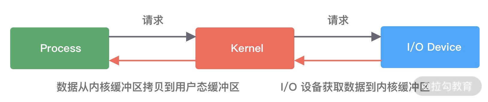
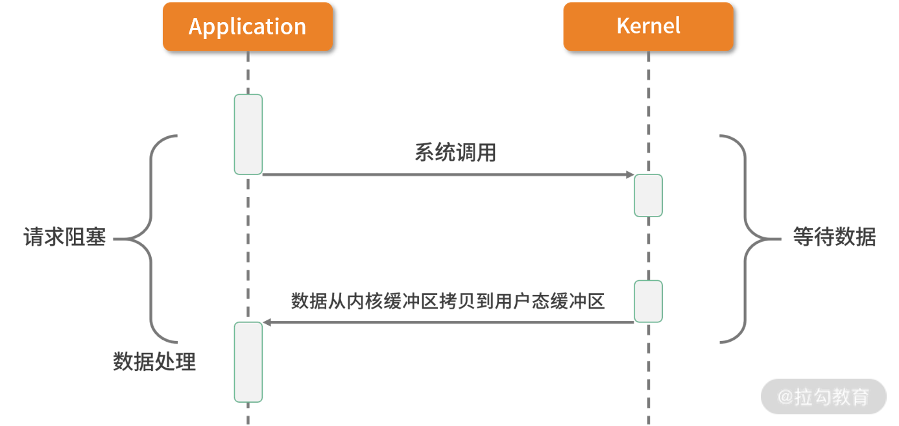
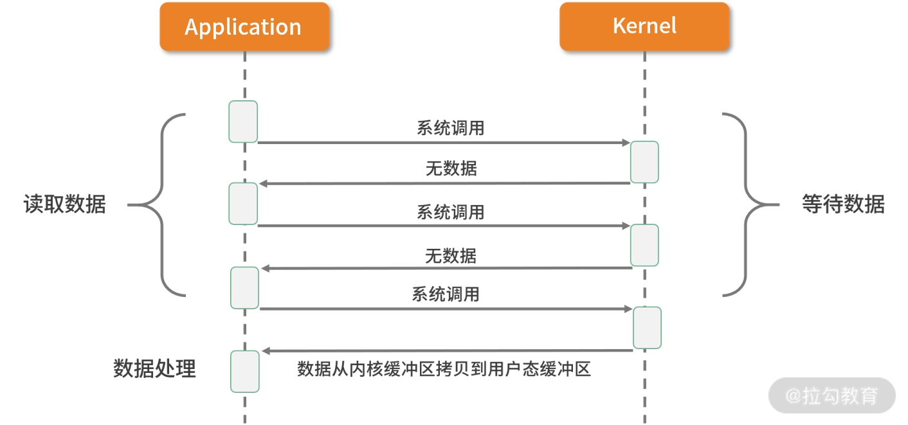
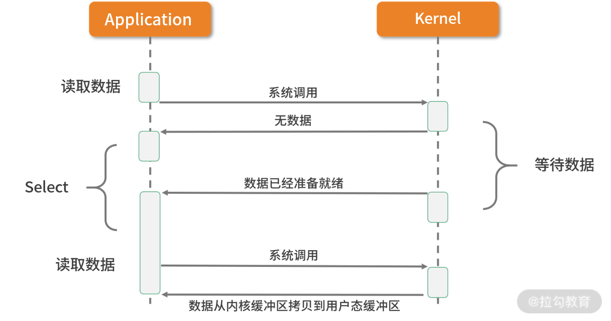
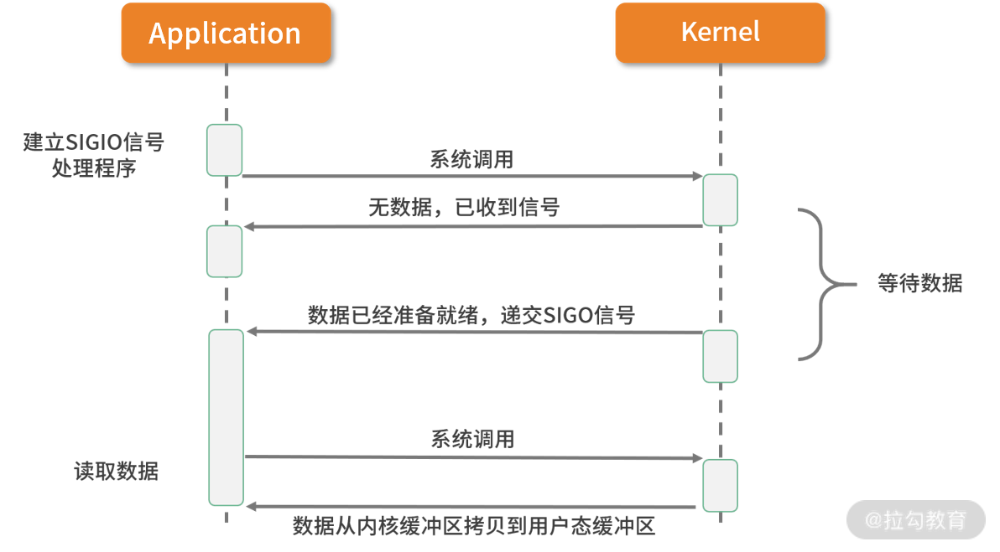
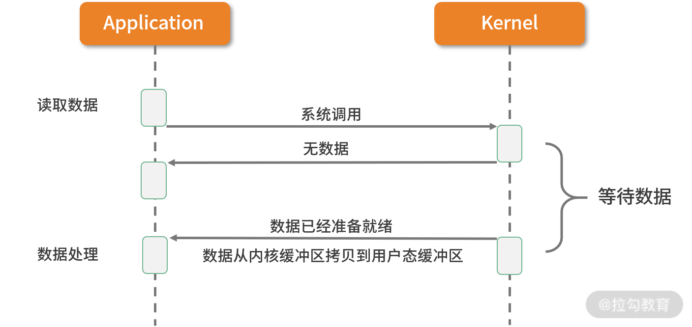
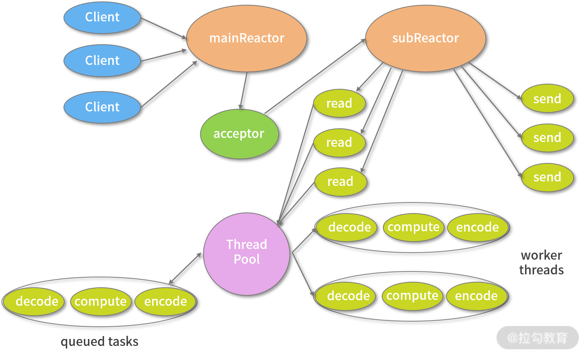

- 00 学好 Netty，是你修炼 Java 内功的必经之路.md.html
- 01 初识 Netty：为什么 Netty 这么流行？.md.html
- 02 纵览全局：把握 Netty 整体架构脉络.md.html
- 03 引导器作用：客户端和服务端启动都要做些什么？.md.html
- 04 事件调度层：为什么 EventLoop 是 Netty 的精髓？.md.html
- 05 服务编排层：Pipeline 如何协调各类 Handler ？.md.html
- 06 粘包拆包问题：如何获取一个完整的网络包？.md.html
- 07 接头暗语：如何利用 Netty 实现自定义协议通信？.md.html
- 08 开箱即用：Netty 支持哪些常用的解码器？.md.html
- 09 数据传输：writeAndFlush 处理流程剖析.md.html
- 10 双刃剑：合理管理 Netty 堆外内存.md.html
- 11 另起炉灶：Netty 数据传输载体 ByteBuf 详解.md.html
- 12 他山之石：高性能内存分配器 jemalloc 基本原理.md.html
- 13 举一反三：Netty 高性能内存管理设计（上）.md.html
- 14 举一反三：Netty 高性能内存管理设计（下）.md.html
- 15 轻量级对象回收站：Recycler 对象池技术解析.md.html
- 16 IO 加速：与众不同的 Netty 零拷贝技术.md.html
- 17 源码篇：从 Linux 出发深入剖析服务端启动流程.md.html
- 18 源码篇：解密 Netty Reactor 线程模型.md.html
- 19 源码篇：一个网络请求在 Netty 中的旅程.md.html
- 20 技巧篇：Netty 的 FastThreadLocal 究竟比 ThreadLocal 快在哪儿？.md.html
- 21 技巧篇：延迟任务处理神器之时间轮 HashedWheelTimer.md.html
- 22 技巧篇：高性能无锁队列 Mpsc Queue.md.html
- 23 架构设计：如何实现一个高性能分布式 RPC 框架.md.html
- 24 服务发布与订阅：搭建生产者和消费者的基础框架.md.html
- 25 远程通信：通信协议设计以及编解码的实现.md.html
- 26 服务治理：服务发现与负载均衡机制的实现.md.html
- 27 动态代理：为用户屏蔽 RPC 调用的底层细节.md.html
- 28 实战总结：RPC 实战总结与进阶延伸.md.html
- 29 编程思想：Netty 中应用了哪些设计模式？.md.html
- 30 实践总结：Netty 在项目开发中的一些最佳实践.md.html
- 31 结束语 技术成长之路：如何打造自己的技术体系.md.html
01 初识 Netty：为什么 Netty 这么流行？
你好，我是若地。今天我们将正式开始学习本专栏，一同了解一下 Netty。
众所周知，Java 的生态非常完善，同一类型的需求可能会有几款产品供你选择。那为什么 Java 的网络编程框架大家都会向你推荐 Netty，而不是 Java NIO、Mina、Grizzy 呢？
本节课，我们就一起来看看 Netty 为什么这么流行，它到底解决了什么问题，以及目前它的发展现状，让你对 Netty 有一个全面的认识。
为什么选择 Netty？
Netty 是一款用于高效开发网络应用的 NIO 网络框架，它大大简化了网络应用的开发过程。我们所熟知的 TCP 和 UDP 的 Socket 服务器开发，就是一个有关 Netty 简化网络应用开发的典型案例。
既然 Netty 是网络应用框架，那我们永远绕不开以下几个核心关注点：
- I/O 模型、线程模型和事件处理机制；
- 易用性 API 接口；
- 对数据协议、序列化的支持。
我们之所以会最终选择 Netty，是因为 Netty 围绕这些核心要点可以做到尽善尽美，其健壮性、性能、可扩展性在同领域的框架中都首屈一指。下面我们从以下三个方面一起来看看，Netty 到底有多厉害。
高性能，低延迟
经常听到这么一句话：“网络编程只要你使用了 Netty 框架，你的程序性能基本就不会差。”这句话虽然有些绝对，但是也从侧面上反映了人们对 Netty 高性能的肯定。
实现高性能的网络应用框架离不开 I/O 模型问题，在了解 Netty 高性能原理之前我们需要先储备 I/O 模型的基本知识。
I/O 请求可以分为两个阶段，分别为调用阶段和执行阶段。
- 第一个阶段为I/O 调用阶段，即用户进程向内核发起系统调用。
- 第二个阶段为I/O 执行阶段。此时，内核等待 I/O 请求处理完成返回。该阶段分为两个过程：首先等待数据就绪，并写入内核缓冲区；随后将内核缓冲区数据拷贝至用户态缓冲区。
为了方便大家理解，可以看一下这张图：

接下来我们来回顾一下 Linux 的 5 种主要 I/O 模式，并看下各种 I/O 模式的优劣势都在哪里？
1. 同步阻塞 I/O（BIO）

如上图所表现的那样，应用进程向内核发起 I/O 请求，发起调用的线程一直等待内核返回结果。一次完整的 I/O 请求称为BIO（Blocking IO，阻塞 I/O），所以 BIO 在实现异步操作时，只能使用多线程模型，一个请求对应一个线程。但是，线程的资源是有限且宝贵的，创建过多的线程会增加线程切换的开销。
2. 同步非阻塞 I/O（NIO）

在刚介绍完 BIO 的网络模型之后，NIO 自然就很好理解了。
如上图所示，应用进程向内核发起 I/O 请求后不再会同步等待结果，而是会立即返回，通过轮询的方式获取请求结果。NIO 相比 BIO 虽然大幅提升了性能，但是轮询过程中大量的系统调用导致上下文切换开销很大。所以，单独使用非阻塞 I/O 时效率并不高，而且随着并发量的提升，非阻塞 I/O 会存在严重的性能浪费。
3. I/O 多路复用

多路复用实现了一个线程处理多个 I/O 句柄的操作。多路指的是多个数据通道，复用指的是使用一个或多个固定线程来处理每一个 Socket。select、poll、epoll 都是 I/O 多路复用的具体实现，线程一次 select 调用可以获取内核态中多个数据通道的数据状态。多路复用解决了同步阻塞 I/O 和同步非阻塞 I/O 的问题，是一种非常高效的 I/O 模型。
4. 信号驱动 I/O

信号驱动 I/O 并不常用，它是一种半异步的 I/O 模型。在使用信号驱动 I/O 时，当数据准备就绪后，内核通过发送一个 SIGIO 信号通知应用进程，应用进程就可以开始读取数据了。
5. 异步 I/O

异步 I/O 最重要的一点是从内核缓冲区拷贝数据到用户态缓冲区的过程也是由系统异步完成，应用进程只需要在指定的数组中引用数据即可。异步 I/O 与信号驱动 I/O 这种半异步模式的主要区别：信号驱动 I/O 由内核通知何时可以开始一个 I/O 操作，而异步 I/O 由内核通知 I/O 操作何时已经完成。
了解了上述五种 I/O，我们再来看 Netty 如何实现自己的 I/O 模型。Netty 的 I/O 模型是基于非阻塞 I/O 实现的，底层依赖的是 JDK NIO 框架的多路复用器 Selector。一个多路复用器 Selector 可以同时轮询多个 Channel，采用 epoll 模式后，只需要一个线程负责 Selector 的轮询，就可以接入成千上万的客户端。
在 I/O 多路复用的场景下，当有数据处于就绪状态后，需要一个事件分发器（Event Dispather），它负责将读写事件分发给对应的读写事件处理器（Event Handler）。事件分发器有两种设计模式：Reactor 和 Proactor，Reactor 采用同步 I/O， Proactor 采用异步 I/O。
Reactor 实现相对简单，适合处理耗时短的场景，对于耗时长的 I/O 操作容易造成阻塞。Proactor 性能更高，但是实现逻辑非常复杂，目前主流的事件驱动模型还是依赖 select 或 epoll 来实现。

（摘自 Lea D. Scalable IO in Java ）
上图所描述的便是 Netty 所采用的主从 Reactor 多线程模型，所有的 I/O 事件都注册到一个 I/O 多路复用器上，当有 I/O 事件准备就绪后，I/O 多路复用器会将该 I/O 事件通过事件分发器分发到对应的事件处理器中。该线程模型避免了同步问题以及多线程切换带来的资源开销，真正做到高性能、低延迟。
完美弥补 Java NIO 的缺陷
在 JDK 1.4 投入使用之前，只有 BIO 一种模式。开发过程相对简单。新来一个连接就会创建一个新的线程处理。随着请求并发度的提升，BIO 很快遇到了性能瓶颈。JDK 1.4 以后开始引入了 NIO 技术，支持 select 和 poll；JDK 1.5 支持了 epoll；JDK 1.7 发布了 NIO2，支持 AIO 模型。Java 在网络领域取得了长足的进步。
既然 JDK NIO 性能已经非常优秀，为什么还要选择 Netty？这是因为 Netty 做了 JDK 该做的事，但是做得更加完备。我们一起看下 Netty 相比 JDK NIO 有哪些突出的优势。
- 易用性。 我们使用 JDK NIO 编程需要了解很多复杂的概念，比如 Channels、Selectors、Sockets、Buffers 等，编码复杂程度令人发指。相反，Netty 在 NIO 基础上进行了更高层次的封装，屏蔽了 NIO 的复杂性；Netty 封装了更加人性化的 API，统一的 API（阻塞/非阻塞） 大大降低了开发者的上手难度；与此同时，Netty 提供了很多开箱即用的工具，例如常用的行解码器、长度域解码器等，而这些在 JDK NIO 中都需要你自己实现。
- 稳定性。 Netty 更加可靠稳定，修复和完善了 JDK NIO 较多已知问题，例如臭名昭著的 select 空转导致 CPU 消耗 100%，TCP 断线重连，keep-alive 检测等问题。
- 可扩展性。 Netty 的可扩展性在很多地方都有体现，这里我主要列举其中的两点：一个是可定制化的线程模型，用户可以通过启动的配置参数选择 Reactor 线程模型；另一个是可扩展的事件驱动模型，将框架层和业务层的关注点分离。大部分情况下，开发者只需要关注 ChannelHandler 的业务逻辑实现。
更低的资源消耗
作为网络通信框架，需要处理海量的网络数据，那么必然面临有大量的网络对象需要创建和销毁的问题，对于 JVM GC 并不友好。为了降低 JVM 垃圾回收的压力，Netty 主要采用了两种优化手段：
- 对象池复用技术。 Netty 通过复用对象，避免频繁创建和销毁带来的开销。
- 零拷贝技术。 除了操作系统级别的零拷贝技术外，Netty 提供了更多面向用户态的零拷贝技术，例如 Netty 在 I/O 读写时直接使用 DirectBuffer，从而避免了数据在堆内存和堆外内存之间的拷贝。
因为 Netty 不仅做到了高性能、低延迟以及更低的资源消耗，还完美弥补了 Java NIO 的缺陷，所以在网络编程时越来越受到开发者们的青睐。
网络框架的选型
很多开发者都使用过 Tomcat，Tomcat 作为一款非常优秀的 Web 服务器看上去已经帮我们解决了类似问题，那么它与 Netty 到底有什么不同？
Netty 和 Tomcat 最大的区别在于对通信协议的支持，可以说 Tomcat 是一个 HTTP Server，它主要解决 HTTP 协议层的传输，而 Netty 不仅支持 HTTP 协议，还支持 SSH、TLS/SSL 等多种应用层的协议，而且能够自定义应用层协议。
Tomcat 需要遵循 Servlet 规范，在 Servlet 3.0 之前采用的是同步阻塞模型，Tomcat 6.x 版本之后已经支持 NIO，性能得到较大提升。然而 Netty 与 Tomcat 侧重点不同，所以不需要受到 Servlet 规范的约束，可以最大化发挥 NIO 特性。
如果你仅仅需要一个 HTTP 服务器，那么我推荐你使用 Tomcat。术业有专攻，Tomcat 在这方面的成熟度和稳定性更好。但如果你需要做面向 TCP 的网络应用开发，那么 Netty 才是你最佳的选择。
此外，比较出名的网络框架还有 Mina 和 Grizzly。Mina 是 Apache Directory 服务器底层的 NIO 框架，由于 Mina 和 Netty 都是 Trustin Lee 主导的作品，所以两者在设计理念上基本一致。Netty 出现的时间更晚，可以认为是 Mina 的升级版，解决了 Mina 一些设计上的问题。比如 Netty 提供了可扩展的编解码接口、优化了 ByteBuffer 的分配方式，让用户使用起来更为便捷、安全。Grizzly 出身 Sun 公司，从设计理念上看没有 Netty 优雅，几乎是对 Java NIO 比较初级的封装，目前业界使用的范围也很小。
综上所述，Netty 是我们一个较好的选择。
Netty 的发展现状
Netty 如此成功离不开社区的精心运营，迭代周期短且文档比较齐全，如果你遇到任何问题通过 issue 或者邮件都可以得到非常及时的答复。
你可以去官方社区学习相关资料，下面这些网站可以帮助你学习。
- 官方社区。
- GitHub。截止至 2020 年 7 月，2.4w+ star，一共被 4w+ 的项目所使用。
Netty 官方提供 3.x、4.x 的稳定版本，之前一直处于测试阶段的 5.x 版本已被作者放弃维护。此前，官方从未对外发布过任何 5.x 的稳定版本。我在工作中也会碰到一些业务方在开发新项目时直接使用 Netty 5.x 版本的情况，这是因为不少人信任 Netty 社区，并认为这样可以避免以后升级。可惜这一省事之举随着 5.x 版本废弃后全白费了。不过这也给我们带来了一个经验教训：尽可能不要在生产环境使用任何非稳定版本的组件。
如果没有项目历史包袱，目前主流推荐 Netty 4.x 的稳定版本，Netty 3.x 到 4.x 版本发生了较大变化，属于不兼容升级，下面我们初步了解下 4.x 版本有哪些值得你关注的变化和新特性。
- 项目结构：模块化程度更高，包名从 org.jboss.netty 更新为 io.netty，不再属于 Jboss。
- 常用 API：大多 API 都已经支持流式风格，更多新的 API 参考以下网址：https://netty.io/news/2013/06/18/4-0-0-CR5.html。
- Buffer 相关优化：Buffer 相关功能调整了现在 5 点。
- ChannelBuffer 变更为 ByteBuf，Buffer 相关的工具类可以独立使用。由于人性化的 Buffer API 设计，它已经成为 Java ByteBuffer 的完美替代品。
- Buffer 统一为动态变化，可以更安全地更改 Buffer 的容量。
- 增加新的数据类型 CompositeByteBuf，可以用于减少数据拷贝。
- GC 更加友好，增加池化缓存，4.1 版本开始 jemalloc 成为默认内存分配方式。
- 内存泄漏检测功能。
- 通用工具类：io.netty.util.concurrent 包中提供了较多异步编程的数据结构。
- 更加严谨的线程模型控制，降低用户编写 ChannelHandler 的心智，不必过于担心线程安全问题。
可见 Netty 4.x 带来了很多提升，性能、健壮性都变得更加强大了。Netty 精益求精的设计精神值得每个人学习。当然，其中还有更多细节变化，感兴趣的同学可以参考以下网址：https://netty.io/wiki/new-and-noteworthy-in-4.0.html。如果你现在对这些概念还不是很清晰，也不必担心，专栏后续的内容中我都会具体讲解。
谁在使用 Netty？
Netty 凭借其强大的社区影响力，越来越多的公司逐渐采用Netty 作为他们的底层通信框架，下图中我列举了一些正在使用 Netty 的公司，一起感受下它的热度吧。
Netty 经过很多出名产品在线上的大规模验证，其健壮性和稳定性都被业界认可，其中典型的产品有一下几个。
- 服务治理：Apache Dubbo、gRPC。
- 大数据：Hbase、Spark、Flink、Storm。
- 搜索引擎：Elasticsearch。
- 消息队列：RocketMQ、ActiveMQ。
还有更多优秀的产品我就不一一列举了，感兴趣的小伙伴可以参考下面网址：https://netty.io/wiki/related-projects.html。
总结
作为正式学习专栏前的开胃餐，今天我主要向你介绍了 Netty 的优势与特色，同时提到了 I/O 多路复用、Reactor 设计模式、零拷贝等必备的知识点，帮助你对 Netty 有了基本的认识。相信你一定意犹未尽，在后续的章节中我们将逐步走进 Netty 的世界。
最后，我也想给你留一个思考题：Netty 的内部结构大概如何？为什么 Netty 能够成为如此优秀的工具？下节课我将为你解答这个问题。